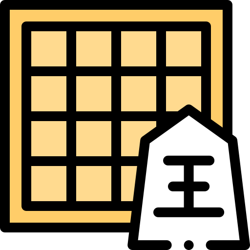

 Š Ó G I N Á T O R
Už nepotřebujete nosit šógi s sebou.
Hlavní strana
Malé varianty
3x4 - Zvířecí šógi
4x5 - Mikro šógi
5x5 - Mini šógi
5x5 - Kyótské šógi
6x6 - Judkinsovy šógi
6x6 - Velrybí šógi
7x7 - Ptačí šógi
7x9 - Oštěpářské šógi
8x8 - Eurošógi
9x8/8x8 - Heiské šógi (12. st.)
Střední varianty
9x9 - Standardní šógi
9x9 - Malé šógi (16. st.)
9x9 - Hasami šógi
9x9 - Annan/Korejské šógi
Velké varianty
10x10 - Okisacké šógi
11x11 - Wa/Jamato šógi
12x12 - Střední šógi
13x13 - Heiské velké šógi
15x15 - Velké šógi
16x16 - Exotické šógi
17x17 - Velevelké šógi
19x19 - Převelevelké šógi
19x19 - Hišigatské šógi
19x19 - Široké šógi
25x25 - Ohromné šógi
36x36 - Obrovské šógi
ŠógiWeb
9x9 - Standardní šógi
Šógivnice
Povýšit/Ponížit
Zrušit výběr
Uložit stav
Obnovit stav
Zajmuté kameny
Vybraný kámen
Kámen sdružený povýšením
Použité čínské znaky